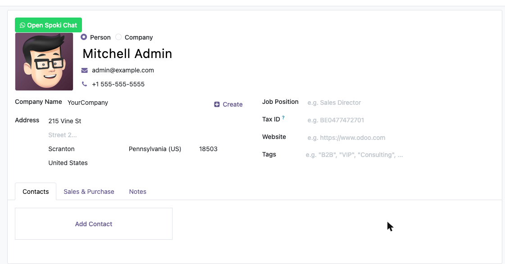
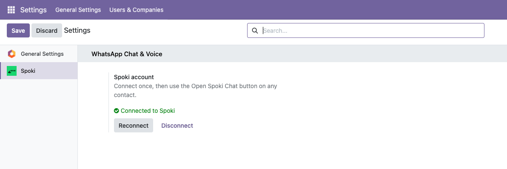

Click Open Spoki Chat on a contact and the conversation opens right in the form, loaded from the contact's mobile or phone number. Reply exactly as you would in Spoki.
Call the contact on WhatsApp from the same window. Your browser asks for microphone access the first time.
No keys to copy. An administrator clicks Connect to Spoki once, picks the Spoki account and the whole Odoo database is ready.
A data-only module with no Python code: it installs on Odoo Online (odoo.com), Odoo.sh and on-premise, Community and Enterprise.

Questions? Visit support.spoki.com.